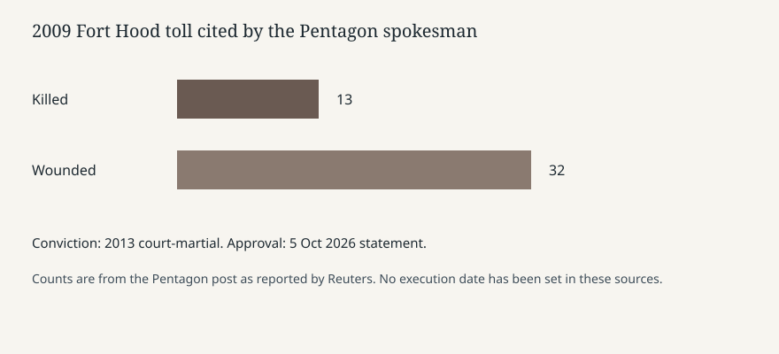

Washington · Military justice · 5–6 October 2026
The Pentagon said Trump approved a firing squad in the Hasan death sentence; no date is set

What the desks agree
On Monday 5 October 2026 the Pentagon said President Donald Trump had approved a military firing squad as the method for carrying out the death sentence of former Army major Nidal Malik Hasan. Reuters, CNN and Fox News all attribute the announcement to Pentagon spokesman Sean Parnell, posting on X. Parnell wrote that Defense Secretary Pete Hegseth recommended the method and that Trump approved it. The Secretary of the Army is to set the time and place. No date appears in these articles.
The underlying case is not new. On 5 November 2009 Hasan, then an Army psychiatrist, opened fire at a soldier readiness processing center at Fort Hood, Texas. The Pentagon count, repeated by the wires, is 13 people killed — 12 unarmed active-duty soldiers and one retired serviceman — and 32 wounded. A court-martial panel of officers convicted him in 2013 of 13 counts of premeditated murder and 32 counts of attempted murder and sentenced him to death. Under the Uniform Code of Military Justice a court-martial death sentence is not carried out until the president approves it. That approval step is the Monday fact.
Reuters notes that military executions are rare and that, if this one is carried out, it would be the first since 1961. CNN says it would be the Army’s first firing-squad execution of a soldier since the Second World War and the first military death sentence imposed in 65 years. The two “firsts” answer different questions: last military execution versus last use of this method. Both can be true. Neither is a completed execution.
What is only a quote
Parnell’s line “Judgment day for Hasan has finally come” is a spokesman’s sentence. Hegseth’s reply, “Justice,” is also a sentence. They do not add a warrant, a clock time, or a finding. Fox’s headline calls Hasan a terrorist. He was convicted of premeditated murder under the UCMJ, not of a separate civilian terrorism statute in the articles reviewed here. The religious shout reported from the attack is part of the trial record as the wires retell it. It is not, by itself, the legal element the president approved on Monday.
Hasan’s own later description of the shooting as retaliation for U.S. wars is his stated motive, carried by Reuters. Motive is not a new evidentiary hearing. A reader who wants the 2013 findings of fact still has to read the court-martial record. Monday’s posts do not republish it.
The rule the approval sits on
The president is the final approving authority for a military death sentence. Approval of the sentence and specification of a method are related but not identical acts. Reuters says firing squad, electrocution and gas asphyxiation were added in recent months to permissible methods for the gravest federal crimes. That sentence is about the federal execution protocol. Hasan’s case is a military sentence. The wires do not quote the Army regulation that lists methods, so this page does not invent one. What is public is the spokesman’s statement that a firing squad was recommended and approved, and that the Army secretary sets time and place.
Fox notes that President George W. Bush approved a different military execution that a federal court stopped in 2008. That comparison is a legal-history aside. It does not say a court has enjoined Hasan’s approval. No article in this set reports a new stay filed on Monday night.
What this story is not
It is not an execution. It is not a description of how a firing squad is arranged, and this page will not supply one. It is not a finding that the 2009 attack has been reclassified by a court this week. It is not a claim about other death-row cases. The photograph is the Pentagon in 2008, an agency exterior, chosen because a portrait or a 2009 scene would do a different job. The chart restates only the toll the spokesman cited.
The checkable Monday item is the approval announcement: who recommended, who approved, which method was named, who sets the date, and which 2009 and 2013 facts the wires attach. The date itself is still blank.

What remains unchecked
Parnell’s post is the record these desks share. A presidential memorandum, if one exists on paper, is not linked. The Army secretary has not published a time or place. Whether Hasan’s counsel has filed a new stay since the post is not in Reuters, CNN or Fox as of Tuesday morning. The 13 and 32 figures are the long-standing toll; they are not a new casualty review. Readers should treat “first since 1961” as a historical claim carried by the wire, not as a docket entry from the Court of Appeals for the Armed Forces reproduced here.
Fort Hood has been renamed and renamed again in statute and post practice over the last several years. The wires still use Fort Hood for the 2009 event, which is the name in the conviction. This page follows that event name and does not adjudicate the installation’s current title. None of that naming history changes the approval announcement.
Source articles and scores
Reuters attributes the method to the Pentagon post and separates the 1961 marker. CNN’s headline says an execution was approved as if the event had occurred; the body is an approval. Fox treats “terrorist” as the legal description. CNN’s URL spells the surname Nadal; the body uses Nidal.